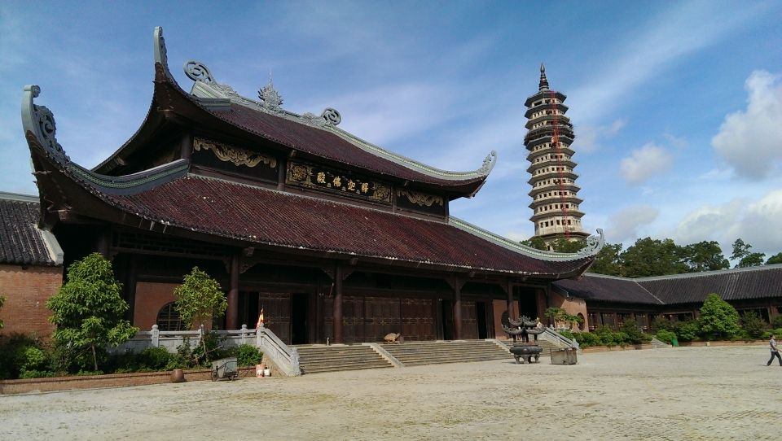

Chùa Bái Đính nằm trong quần thể danh thắng Tràng An, thuộc xã Gia Sinh, huyện Gia Viễn, tỉnh Ninh Bình, là một trong những ngôi chùa lớn và nổi tiếng nhất Việt Nam. Khu chùa gồm chùa cổ trên núi và chùa mới với quy mô hoành tráng, mang đậm nét kiến trúc truyền thống kết hợp hiện đại.
Chùa Bái Đính nổi bật với nhiều kỷ lục châu Á và Việt Nam như: tượng Phật bằng đồng lớn nhất, hành lang La Hán dài nhất, và số lượng tượng Phật nhiều nhất. Đây là trung tâm Phật giáo lớn của Việt Nam, thu hút hàng triệu du khách và Phật tử mỗi năm.
2. Chùa Bái Đính ở đâu?
Chùa Bái Đính nằm tại xã Gia Sinh, huyện Gia Viễn, tỉnh Ninh Bình, cách trung tâm thành phố Ninh Bình khoảng 15 km về phía Tây Bắc. Ngôi chùa nằm trong quần thể danh thắng Tràng An, được bao quanh bởi núi đá vôi, rừng cây và hồ nước, tạo nên khung cảnh thanh tịnh, hùng vĩ và thơ mộng.
Vị trí thuận lợi này giúp du khách dễ dàng kết hợp tham quan chùa Bái Đính với các điểm du lịch nổi tiếng khác của Ninh Bình như Tràng An, Tam Cốc – Bích Động hay Cố đô Hoa Lư
3. Giới thiệu về Chùa Bái Đính
Chùa Bái Đính là một quần thể chùa lớn nổi tiếng ở Việt Nam, thuộc xã Gia Sinh, huyện Gia Viễn, tỉnh Ninh Bình. Nơi đây được xem là trung tâm Phật giáo lớn nhất Việt Nam, đồng thời là điểm du lịch văn hóa – tâm linh nổi bật của miền Bắc.
Chùa gồm chùa cổ nằm trên núi Bái Đính và chùa mới được xây dựng với quy mô đồ sộ, mang phong cách kiến trúc truyền thống kết hợp hiện đại. Bái Đính nổi tiếng với nhiều kỷ lục như: tượng Phật bằng đồng lớn nhất Đông Nam Á, hành lang La Hán dài nhất Việt Nam, và chuông đồng lớn nhất Việt Nam.

Không chỉ có giá trị về tâm linh và kiến trúc, chùa Bái Đính còn nằm giữa cảnh quan thiên nhiên hùng vĩ, hòa quyện giữa núi non, sông nước và rừng cây, tạo nên không gian thanh tịnh, linh thiêng và tráng lệ. Đây là điểm đến không thể bỏ qua khi du khách đến với Ninh Bình.